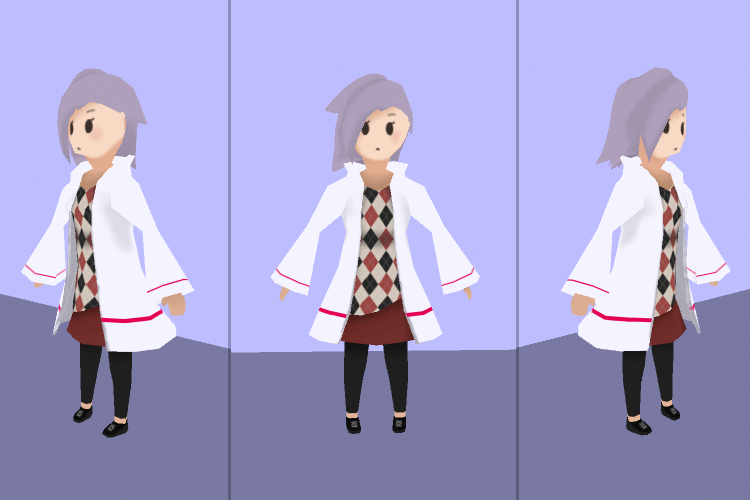
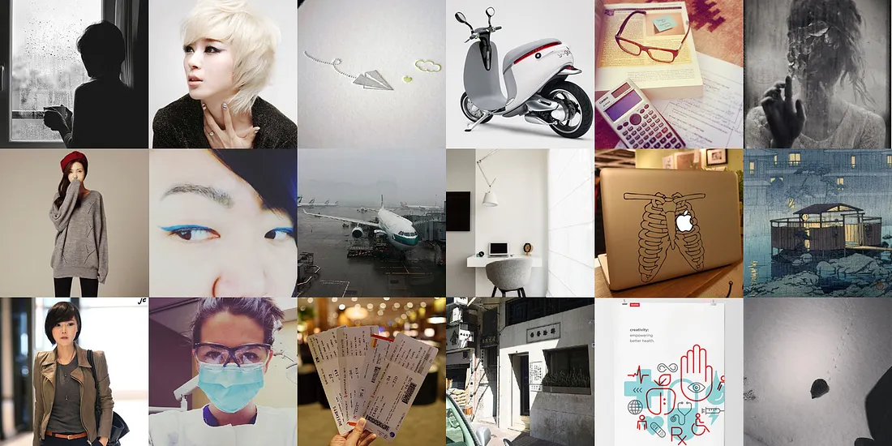
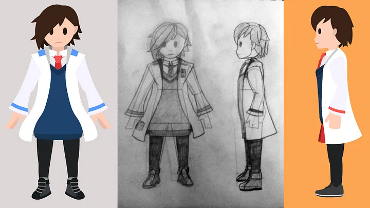
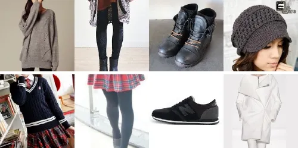
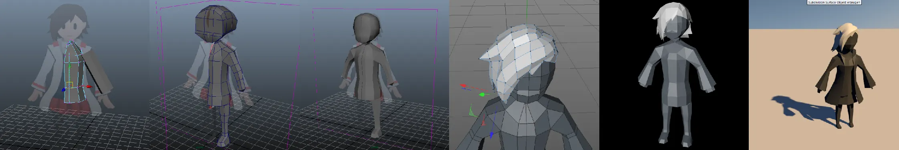
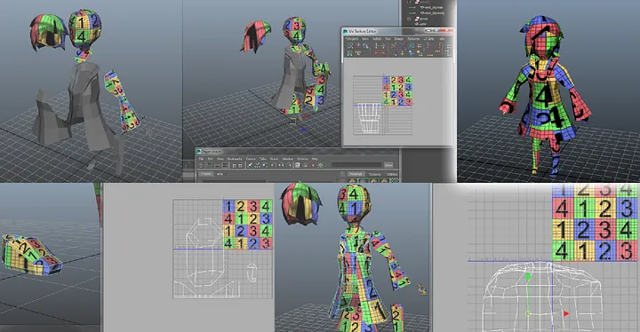
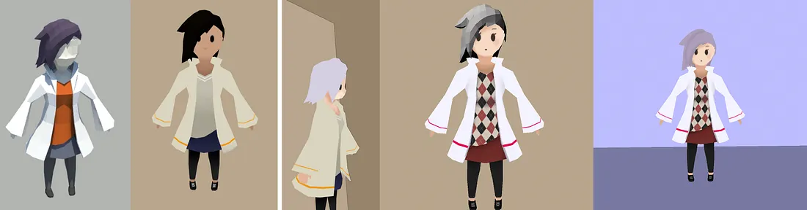

It is the winter of 2016. The final episode of Life is Strange has just been released and I am still reeling from its emotional roller coaster of a story. I have free time and the desire to create a character and story of my own, so I spend the next month wrapped up in the story of Winter Tsoi.
This project was envisioned not only as an exercise in 3D modelling, but also in character and game design, so I first put thought into her backstory and surrounding world, as well as some gameplay mechanics.
Our character is Winter Tsoi Jin-jyu, a 22 year-old Hongkonger returning to the city for the first time since 1997 in order to attend university for medical laboratory science.
She is generally shy, but curious about her Hong Kong heritage. Though she may struggle to form deep friendships, she is truly compassionate and optimistic about humanity to the point of naïveté. Often left alone during childhood, she has a well-developed sense of adventure and curiosity.
Winter has always had a vague memory of something strange happening to her as a young child in Hong Kong, but could never quite place it. She often wonders the true reason her parents left — they say it was the handover to China, but she always questioned if it was something else… As she explores the city, her memories gradually return.
Suddenly, Winter discovers an almost-supernatural power within: microscope-like filters for her everyday life. In a crowded situation, she is better able to notice emotional signals of the surrounding people. Elsewhere, she can instantly form connections between people’s choices and resulting situations. The more she uses her powers, the more she integrates: improving her Cantonese, protesting with classmates, and taking on leadership responsibilities. The less she uses them, the quieter she stays, studying harder and sticking with her few friends. However, more of her old life seems to be disappearing from her memory. Is her very existence being erased?
• • •

I browsed Instagram and Tumblr for hours and tried to view the world through Winter’s own mind: things she would wear, how she would act, what she would photograph, and her feelings around everyday life.
• • •

With a good picture of Winter in my mind, I went about putting it on (digital) paper. I found even more specific references of what she would wear and how she would carry herself. I settled on a somewhat casual school setting, though she is still wearing her iconic lab coat.

Usually, I begin modelling directly from my sketches. This time, however, I vectorized and coloured them first (more for my own illustration and proportion practice).
As the final model would be following a low-poly, cel-shaded style, I kept my sketches simple. (also, I correctly predicted that I would work nowhere as fast as I would like to) Major shout-out to Robopolis for having so much inspirational work, in style, form, and animation.
• • •

I am most comfortable modelling in Cinema 4D, but I decided to begin in Maya to get back in shape with it — and see how far I got with that. By the time I needed to model the hair, I had to take it back to C4D; Maya was just too frustrating.
Things went quite a bit faster from that point on and I was able to finish up all the details on her clothing in a few days time. A particularly stupid decision on my part was to model two-sided pieces of clothing, such as her lab coat and skirt. In hindsight, I should’ve just used a separate, open piece of geometry for those, so I wouldn’t have to worry about polygons clipping through. Were I ever to animate this, I’d have to go back and change this.
• • •

Astute 3D artists may have noticed I’ve moved back to Maya for texturing. Ironically, I’m less comfortable texturing in C4D, since I never actually learned. My C4D skills skew more towards modelling and motion graphics, so most textures there are just shaders.
That being said, texture mapping in Maya is not easy! I spent hours staring at those dumb checker maps and pulling points around in the UV editor. At some point, though, I had to stop my own perfectionism (especially on minor parts like the shoes) and move on.

At this point, the end of the month was quickly approaching and I was running out of time to finish up Winter. My goal of rigging and animating the model had flown out the window long ago, but I did at least finish her basic outfit. With the UV maps created, it was pretty simple to iterate back and forth between Photoshop and Maya for the detailed parts of her clothes, such as the patterned sweater and the lines on her lab coat.
• • •
There’s actually quite a bit left undone with this project. I’m constantly inspired by Robopolis’ work and sometimes wonder if I could’ve gone down the 3D animator path instead of the UX design one…
If I ever had the resources (no more Maya/C4D student editions for me now :sadface:), I’d love to come back and work on Winter’s story some more. I can definitely improve on a few aspects of the model, such as the double-sided geometry mentioned earlier.
Of course, the biggest thing with any 3D character project is the animation, which I sadly never got to. I wish I had, because that can really to bring a character to life in an easily-understandable way. The short video below is an early (well, the only) character I made back in 2014 in Maya.
END TRANSMISSION